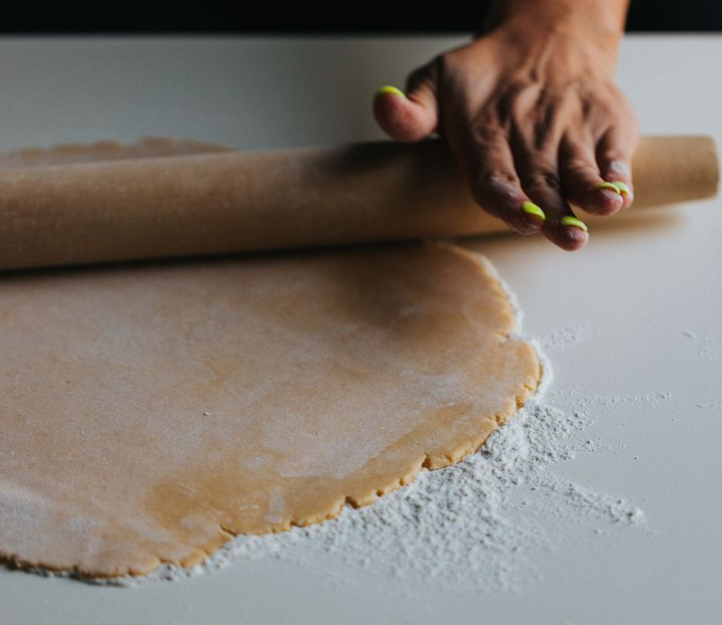

Pâte brisée (à ma maman)
Portions: Selon les besoins
Repos: 1 heure
Ingrédients
-
1 1/2 t de farine

-
1/2 t de graisse
-
sel
-
eau très froide
Instructions
Couper la graisse dans la farine à l'aide d'un coupe-pâte ou de deux couteaux jusqu'à ce que la graisse soit de la grosseur d'un pois.
- 1 1/2 t de farine
- 1/2 t de graisse
Ajouter le sel. Ajouter l'eau froide peu à peu. Former une boule de pâte pas collante. Il faut manipuler la pâte le moins possible pour éviter qu'elle ne durcisse.
Mettre la pâte 1h au réfrigérateur. Rouler la pâte. Faire l'abaisse.